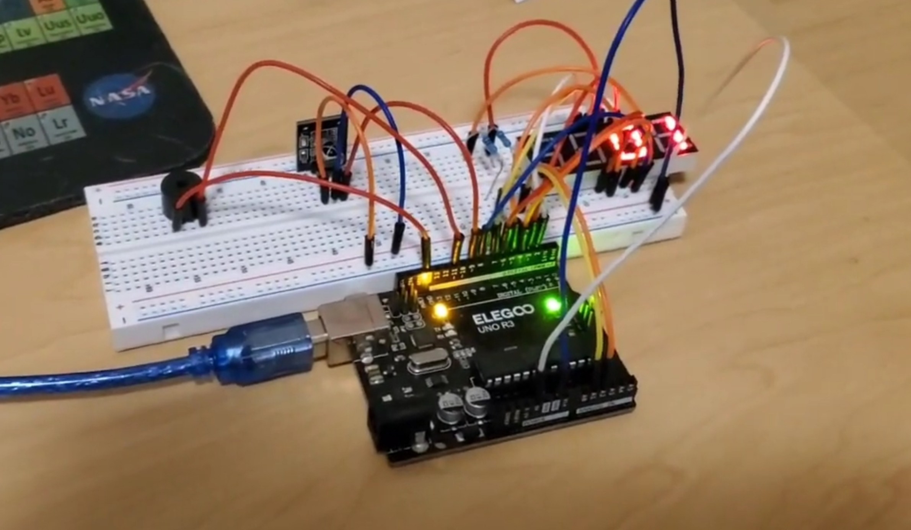

Alarm Buzzer System
This project heavily incorporated principles of electrical engineering. Utilizing the Uno R3 starter kit, I assembled a circuit, interconnecting various components with an Arduino microcontroller, which enabled me to program an alarm system. The system is activated and deactivated using a remote control that transmits signals to an infrared sensor. Users have the flexibility to toggle the alarm and adjust the frequency at which the buzzer activates. Additionally, a 7-segment display provides real-time feedback on the current alarm speed setting.
Components and methods:
- Active Buzzer: Programmed to buzz on and off in regular periods depending on the speed setting.
- Infrared sensor: Reads the infrared signals from each button input on the remote which is used to activate a specific function.
- 7 digit segment display: Programmed to output digits that repersent the current speed setting, uses multiplexing to present multiple digits at a time.
- C++: Language used to write state machines that enact the different functions of the alarm system.